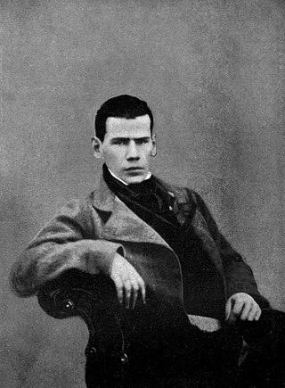

Tolstoy was born at Yasnaya Polyana, a family estate 12 kilometres (7.5 mi) southwest of Tula, Russia, and 200 kilometers (120 mi) south of Moscow. He was the fourth of five children of Count Nikolai Ilyich Tolstoy (1794–1837), a veteran of the Patriotic War of 1812, and Countess Mariya Tolstaya (née Volkonskaya; 1790–1830). After his parents died during his childhood,[14] Tolstoy and his siblings were brought up by relatives.[3] In 1844, he began studying law and oriental languages at Kazan University. His time there was not a success however, with teachers describing him as "both unable and unwilling to learn."[14] Tolstoy left the university in the middle of his studies,[14] returned to Yasnaya Polyana and then spent much of his time in Moscow, Tula and Saint Petersburg, leading a lax and leisurely lifestyle.[3] He began writing during this period,[14] including his first novel Childhood, a fictitious account of his own youth, which was published in 1852.[3] In 1851, after running up heavy gambling debts, he went with his older brother to the Caucasus and joined the army. Tolstoy served as a young artillery officer during the Crimean War and was in Sevastopol during the 11-month-long siege of Sevastopol in 1854–55,[15] including the Battle of the Chernaya. During the war he was recognised for his bravery and courage and promoted to lieutenant.[15] He was appalled by the number of deaths involved in warfare,[14] and left the army after the end of the Crimean War.[3] His conversion from a dissolute and privileged society author to the non-violent and spiritual anarchist of his latter days was brought about by his experience in the army as well as two trips around Europe in 1857 and 1860–61. Others who followed the same path were Alexander Herzen, Mikhail Bakunin and Peter Kropotkin. During his 1857 visit, Tolstoy witnessed a public execution in Paris, a traumatic experience that would mark the rest of his life. Writing in a letter to his friend Vasily Botkin: "The truth is that the State is a conspiracy designed not only to exploit, but above all to corrupt its citizens ... Henceforth, I shall never serve any government anywhere."[16] Tolstoy's concept of non-violence or Ahimsa was bolstered when he read a German version of the Tirukkural.[17] He later instilled the concept in Mahatma Gandhi through his A Letter to a Hindu when young Gandhi corresponded with him seeking his advice.[18][19] His European trip in 1860–61 shaped both his political and literary development when he met Victor Hugo, whose literary talents Tolstoy praised after reading Hugo's newly finished Les Misérables. The similar evocation of battle scenes in Hugo's novel and Tolstoy's War and Peace indicates this influence. Tolstoy's political philosophy was also influenced by a March 1861 visit to French anarchist Pierre-Joseph Proudhon, then living in exile under an assumed name in Brussels. Apart from reviewing Proudhon's forthcoming publication, La Guerre et la Paix (War and Peace in French), whose title Tolstoy would borrow for his masterpiece, the two men discussed education, as Tolstoy wrote in his educational notebooks: "If I recount this conversation with Proudhon, it is to show that, in my personal experience, he was the only man who understood the significance of education and of the printing press in our time." Fired by enthusiasm, Tolstoy returned to Yasnaya Polyana and founded 13 schools for the children of Russia's peasants, who had just been emancipated from serfdom in 1861. Tolstoy described the school's principles in his 1862 essay "The School at Yasnaya Polyana".[20] Tolstoy's educational experiments were short-lived, partly due to harassment by the Tsarist secret police. However, as a direct forerunner to A. S. Neill's Summerhill School, the school at Yasnaya Polyana[21] can justifiably be claimed the first example of a coherent theory of democratic education.
